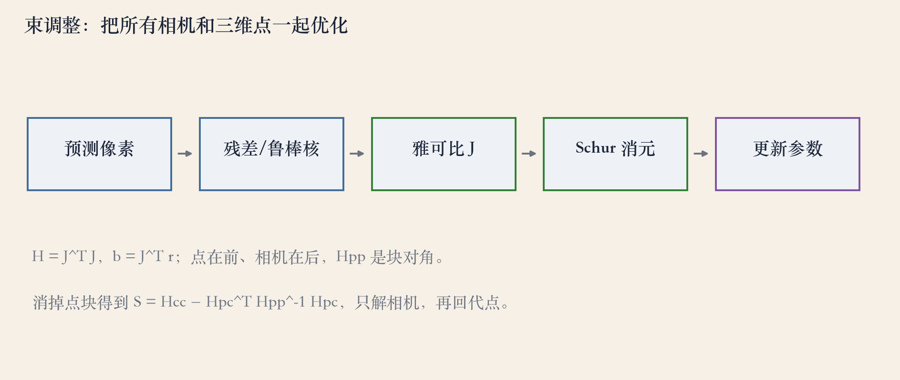
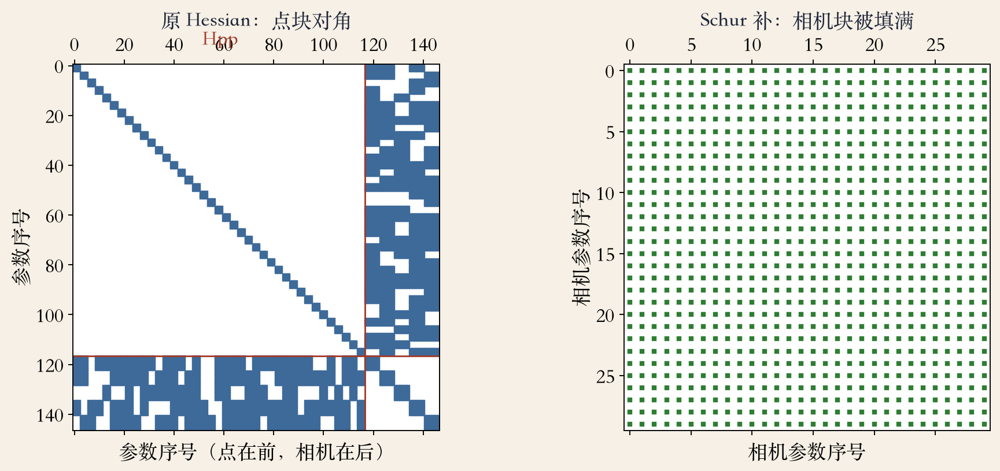
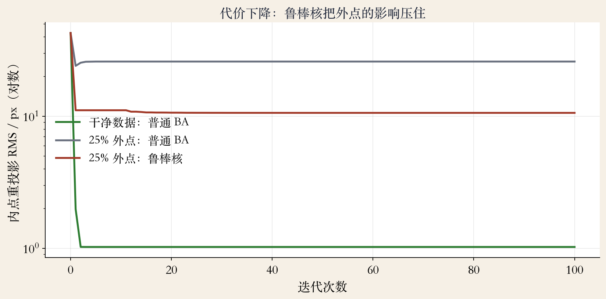

联合优化
束调整：一起优化所有相机和点
- 重投影误差做鲁棒非线性最小化。
- bundle 是射向三维点的一束光线。
- 所有观测的误差一起算。
- 输出所有相机和点的联合最优。
依据：原书第 717 页
两个词
bundle：光线束
adjustment：反复调整
来自摄影测量
一次迭代
一次迭代分五步
- 用当前参数预测每个点的像素。
- 算残差，按协方差和鲁棒核加权。
- 对相机和点求雅可比，拼 H 和 b。
- 解线性系统，更新全部参数。
依据：原书第 718 页；本集实验

束调整五步：预测→残差→雅可比→Schur→更新｜程序生成，未用教材或论文原图
观测方程
点和相机都在未知量里
- xij 依赖点 i、相机 j 和内参。
- 残差是观测减预测。
- Σij 的逆给残差加权。
- 鲁棒核在优化中持续降权。
依据：原书第 718 页
xij = f(pi, Rj, cj, Kj)
pi 点；Rj 旋转；cj 相机中心；Kj 内参
多相机
相机 rig：共享全局参数
- 多个相机固定在同一个 rig 上。
- rig 相对世界还有位姿。
- 轨迹、rig 标定和结构一起估。
- 内参、时间同步也能共享。
依据：原书第 719 页
可以放进优化的参数
内参 K
rig 外参
时间同步误差
稀疏结构
稀疏来自二部图
- 每个特征只连一个点和一个相机。
- 点块是块对角，只和自己耦合。
- Hessian 非零率只有 24.9%。
- 稀疏是问题本身的结构。
依据：原书第 720 页；本集实验
排序可以换
相机少：点在前
点少帧多：相机在前
真实数据更稀疏
消元
Schur 补：先解相机
- Hpp 是点块，Hcc 是相机块。
- 消掉点，得到相机系统 S。
- 先解相机，再回代每个点。
- 实验里相机块 180 变 900 非零。
依据：原书第 721 页；本集实验
S = Hcc − Hpcᵀ Hpp⁻¹ Hpc
全局参数排最后，减少填充；点用齐次坐标
实验一 · 收敛
干净数据：误差降到噪声地板
- 6 相机、40 点、167 个观测。
- 147 个未知量一起优化。
- RMS 从 42.7 降到 1.02 像素。
- 代价 155766 降到 95，100 次迭代。
依据：本集实验
规范自由度 7 维
平移 3 + 旋转 3 + 尺度 1
固定 1 相机 + 1 点
多出的 2 个约束不影响解
实验二 · 稀疏
稀疏与 Schur 补的代价
- H 是 147×147，非零率 24.9%。
- 相机块 180 个非零，补后 900 个。
- 稠密解和 Schur 解最大差 2.2e-14。
- 相机远少于点时，Schur 更省。
依据：本集实验

H 147×147 非零率 24.9%；相机块 180→900 非零｜程序生成，未用教材或论文原图
实验三 · 鲁棒
25% 外点：鲁棒核压住影响
- 外点占 25%，偏移 80 像素。
- 普通 BA 内点 RMS 25.93 像素。
- Huber 核降到 10.60 像素。
- 阈值 4 像素，噪声标准差 1 像素。
依据：原书第 718 页；本集实验

25% 外点：普通 BA 25.93 px，鲁棒核 10.60 px｜程序生成，未用教材或论文原图
失败边界
初值、规范与规模
- 初值太远，会掉进局部极小。
- 规范没固定，H 会奇异。
- 外点不处理，结果被拉歪。
- 点太少或纯旋转，几何退化。
依据：原书第 721–722 页
大规模的做法
增量 / 固定窗口 / 关键帧
VSDF；L∞ + 二阶锥规划
Ceres、OpenSfM 等开源包
工程落地
落地：五步检查
- 固定规范，至少锁一个相机。
- 点在前、相机在后，用 Schur 解。
- 协方差加鲁棒核，先 RANSAC 粗筛。
- 留验证集，看 RMS 和深度符号。
依据：原书第 722 页；本集实验
初始化要保守
先小规模验证
再逐步加相机和点
监控代价是否单调下降
收束 · 下一集
联合、稀疏、鲁棒
- 束调整联合最小化重投影误差。
- 二部图给出稀疏，Schur 拆出小系统。
- 鲁棒核和好初值决定能否收敛。
- 下一集：增量式 SFM。
依据：原书第 717–722 页
两条路线
本集：所有相机和点一起优化
下一集：一台台加相机
每一步都要能回退